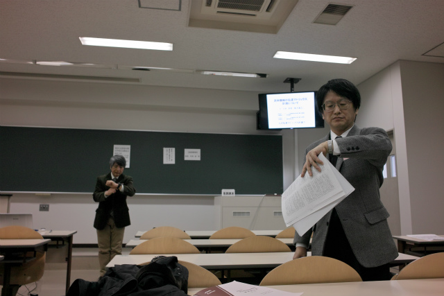
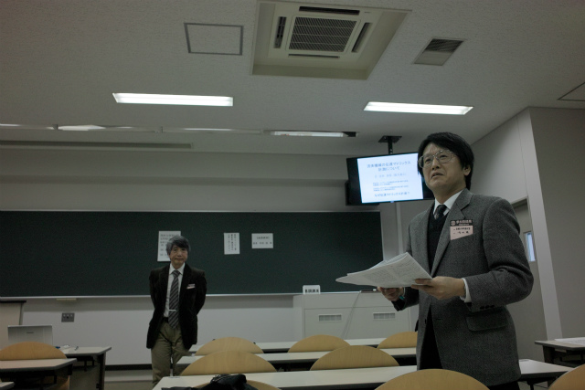
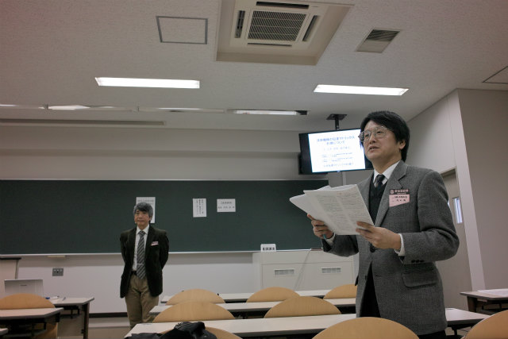
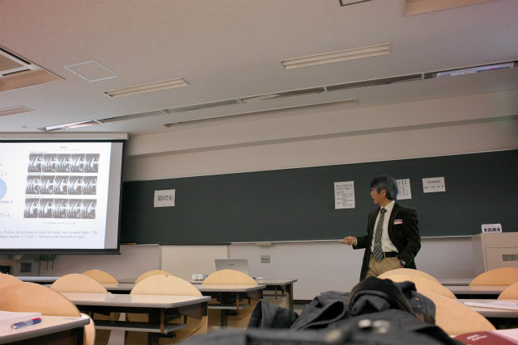
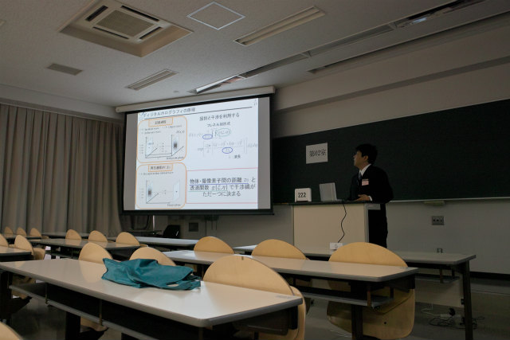
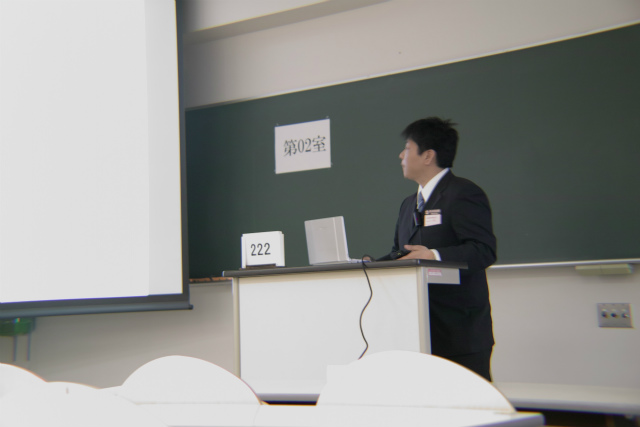
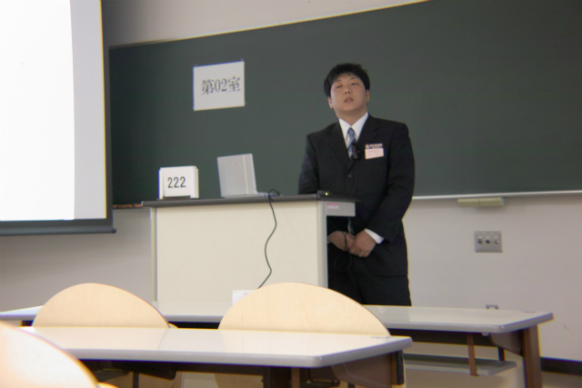

| ・ （社）日本機械学会関西支部 第88期定時総会講演会＠大阪工業大学 (H25.03.16-17) | |||
去年は2人発表で、今年も2人発表です。H野くんはこの前と合わせて2回目の発表。村田先生（代表）と助教の人（幹事）が担当している流体工学懇話会が主催する「OS-2流体計測技術の向上とその応用」の講演会を行いました。村田先生は基調講演の座長、助教の人は「流体計測技術の向上とその応用(3)」の座長を担当しました。 |
|||
|
高速道路と校舎が近い |
H野くん、修論発表より良かった | ||
|

そろそろ時間？ |

基調講演の説明 | ||
|

「流体機械の伝達マトリックス計測について」 辻本良信先生 |

現象の捉え方は勉強になります | ||
|
サイフを駅で落としてテンションだだ下がり中のE川くん |

気を取り直して | ||
|

発表中 |

質疑中 | ||